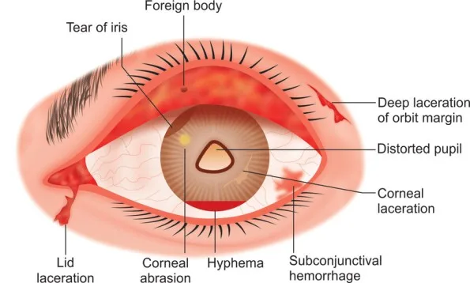
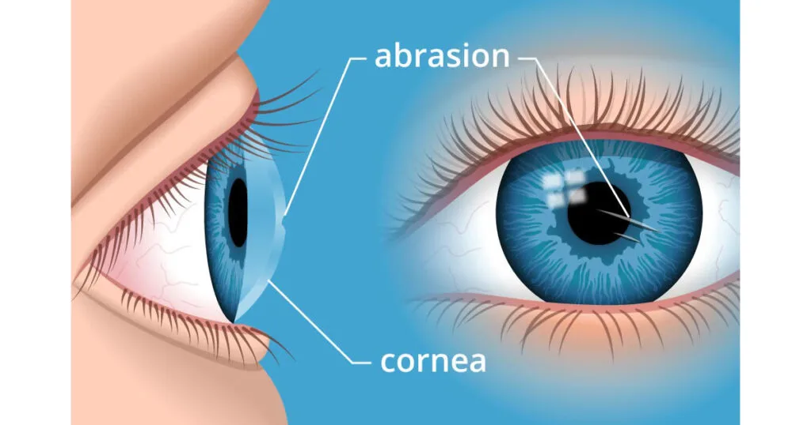
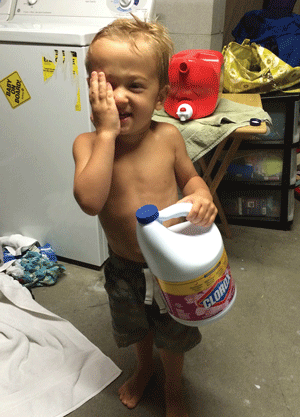
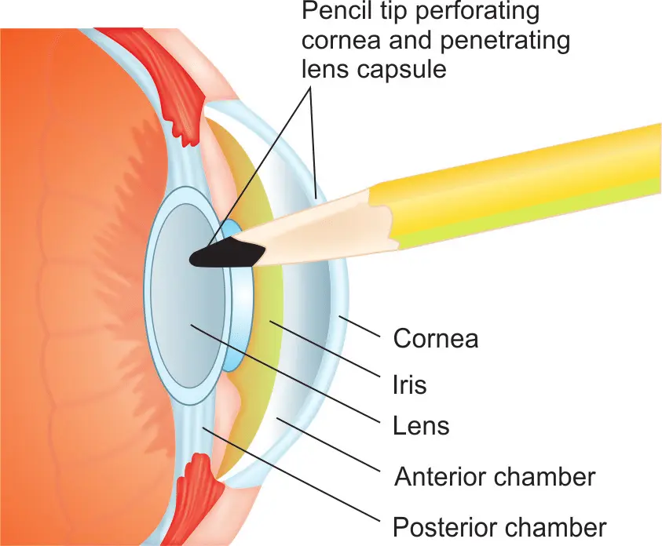
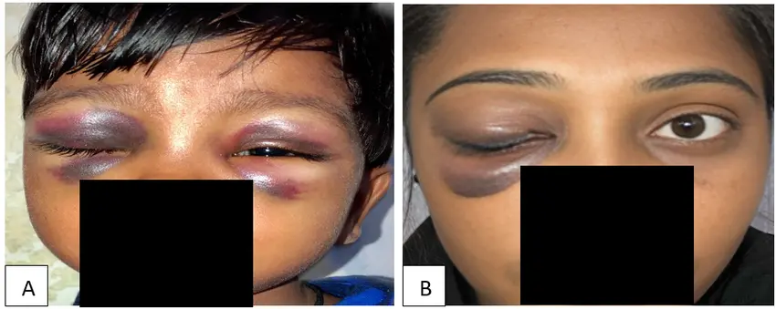
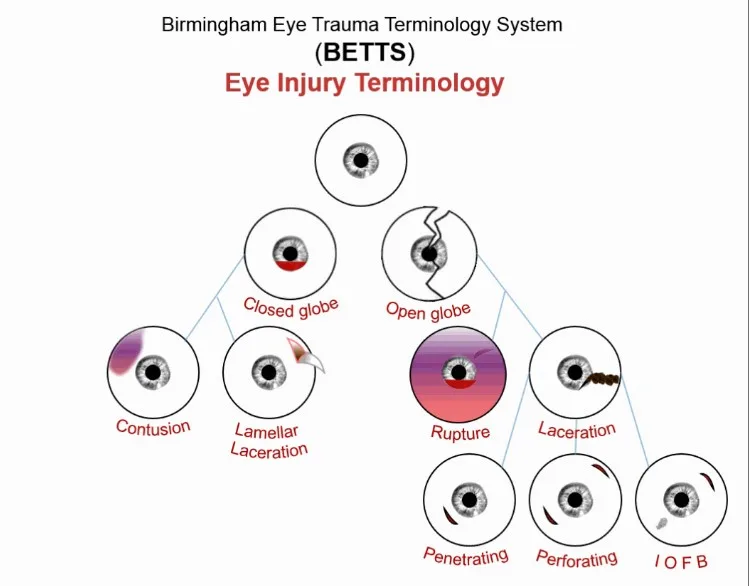

Expanded Nursing Uganda Explanation
Cervical erosion, trauma and polyps should be understood beyond a short definition. Link the concept to patient history, focused assessment, common risks, nursing priorities, documentation and evaluation of outcomes.
Contents — 20 sections (tap to expand)
01 CERVICAL ECTROPION (CERVICAL EROSION)
Cervical ectropion is a condition in which there is a raw-looking area on the cervix.
Cervical ectropion happens when cells from inside the cervical canal grow onto the outside of the cervix. These cells are called glandular cells . Glandular cells are red, so the area may look red. Cervical ectropion is sometimes called cervical erosion or cervical ectopy .
This is a benign (non-cancerous) condition and does not lead to cervical cancer.
The cervix is the lower portion of the uterus. It is composed of two regions; the ectocervix and the endocervical canal.
- Endocervical canal (endocervix) – the more proximal, and ‘inner’ part of the cervix. It is lined by a mucus-secreting simple columnar epithelium.
- Ectocervix – the part of the cervix that projects into the vagina. It is normally lined by stratified squamous non-keratinized epithelium. A cervical ectropion is the presence of everted endocervical columnar epithelium on the ectocervix. This change is thought to be induced by high levels of oestrogen and does not represent metaplasia.
02 Etiology
The most common cause of a Cervical Ectopy is hormonal changes . Women who are taking oral contraceptives often have cervical ectopy. This is thought to be a response to high levels of oestrogen in the body. The cells which line the inside surface of the cervix often travel and sit on the exterior surface of the cervix. This can be seen when examination with a speculum is performed.
It is thought that cervical ectropion is induced by high levels of oestrogen. Therefore, factors that increase the risk of ectropion are related to those that increase levels of oestrogen:
- Use of the combined oral contraceptive pill
- Pregnancy
- Adolescence
- Menstruating age (it is uncommon in postmenopausal women)
03 Clinical Features of Cervical Erosion
Cervical ectropion is most commonly asymptomatic . It can occasionally present with post-coital bleeding, intermenstrual bleeding, or excessive discharge (non-purulent). On speculum examination, the everted columnar epithelium has a reddish appearance – usually arranged in a ring around the external os.
- Unexpected Vaginal Bleeding: Cervical ectropion can lead to unexpected vaginal bleeding, which may occur spontaneously or be triggered by factors like sexual intercourse. The raw area on the cervix, exposed due to ectopy, is more susceptible to irritation and bleeding.
- Spotting or Blood-Streaked Discharge : Women with cervical ectropion may experience spotting or a discharge with streaks of blood. This is a result of the fragile blood vessels in the exposed glandular cells, which can rupture easily, causing small amounts of bleeding.
- Common Occurrence During or After Sexual Intercourse : Bleeding is often associated with sexual intercourse. The friction and pressure exerted during penetration can irritate the raw area on the cervix, leading to bleeding. This may not happen every time but can be a recurring issue for some women.
- Association with Vaginal Infections (Thrush or Bacterial Vaginosis): Presence of vaginal infections such as thrush or bacterial vaginosis can exacerbate the symptoms of cervical ectropion. These infections cause additional irritation to the already sensitive area, leading to increased risk of bleeding.
- Possibility of Asymptomatic Cases : Some women may have cervical ectropion without experiencing noticeable symptoms. The condition may only be identified during routine examinations, such as Pap smears.
04 Investigations of Cervical Erosion.
Cervical erosion/ectropion is diagnosed through a clinical examination. The main role of any investigation is to exclude other potential diagnoses:
- Pregnancy test: To rule out pregnancy as a cause of cervical erosion
- Triple swabs – if there is any suggestion of infection (such as purulent discharge), endocervical and high vaginal swabs should be taken. (A triple swab refers to the collection of three separate swab samples from different areas of the reproductive system during a medical examination)
- Cervical smear – to rule out cervical intraepithelial neoplasia. If a frank lesion is observed, a biopsy should be taken (note that biopsies are not performed as routine).
05 Management of Cervical Erosion
Cervical ectropion is not a harmful condition and does not usually require treatment unless symptomatic.
- First-line treatment is to stop any oestrogen-containing medications – most commonly the combined oral contraceptive pill. This is effective in the majority of cases.
- If symptoms persist, the columnar epithelium can be ablated, using cryotherapy or electrocautery. This will result in significant vaginal discharge until healing is completed.
- Medication to acidify the vaginal pH has been suggested, such as boric acid pessaries.
- Mostly cervical erosion is present in women who do not have any symptoms and thus no specific treatment is advised.
There are three different versions of cauterization therapy:
- Diathermy : This uses heat to cauterize the affected area.
- Cryotherapy : This uses very cold carbon dioxide to freeze the affected area. A 2016 Study found this to be an effective treatment for women with cervical ectropion who were experiencing a lot of discharge.
- Silver nitrate : This is another way to cauterize the glandular cells.
After the treatment, the doctor may recommend that a woman avoids sexual activity and using tampons for up to 4 weeks. After this time, her cervix should have healed.
If a woman experiences any of the following after the treatment, she should go back to the doctor:
- Discharge that smells bad
- Heavy bleeding (more than a average period)
- Ongoing bleeding
06 CERVICAL POLYPS
Cervical polyps are benign growths protruding from the inner surface of the cervix.
They are benign tumours arising from the endocervical epithelium and may be seen as smooth reddish protrusion in the cervix.
They are usually asymptomatic, but a very small minority can undergo malignant change. They are estimated to be present in 2-5% of women.
07 Types of Cervical Polyps
Ectocervical Polyps:
- Location : Ectocervical polyps originate from the outer surface of the cervix, protruding into the vaginal canal.
- Characteristics : These polyps typically emerge from the stratified squamous non-keratinised epithelium of the ectocervix. Due to their external location, they are readily visible during routine gynecological examinations.
- Appearance : Ectocervical polyps often present as finger-like or grape-like growths extending from the cervix. Their appearance may vary in size, and they are usually distinguishable by their pedunculated or stalk-like structure.
- Symptoms : While ectocervical polyps are frequently asymptomatic, they can cause abnormal vaginal bleeding, spotting, or post-coital bleeding when symptoms are present. Their visibility facilitates diagnosis during speculum examinations.
Endocervical Polyps:
- Location : Endocervical polyps develop within the endocervical canal, the more proximal and inner part of the cervix.
- Characteristics : These polyps arise from the mucus-secreting simple columnar epithelium lining the endocervical canal. Unlike ectocervical polyps, their location within the canal makes them less visible during routine examinations.
- Appearance : Endocervical polyps are less noticeable externally but may be detected through imaging techniques like ultrasound or hysteroscopy. They may obstruct the cervical canal, leading to symptoms like infertility or irregular bleeding.
- Symptoms : Similar to ectocervical polyps, endocervical polyps may cause abnormal bleeding or spotting. However, their impact on fertility or interference with cervical smears may be more pronounced due to their location.
08 Clinical Features of Cervical Polyps
Often asymptomatic, identified only through routine cervical screening.
Abnormal vaginal bleeding:
- Menorrhagia (heavy menstrual bleeding)
- Intermenstrual bleeding (bleeding between periods)
- Post-coital bleeding (bleeding after sex)
- Post-menopausal bleeding
- Increased vaginal discharge
- Rarely, large polyps can block the cervical canal, causing infertility.
- On speculum examination, cervical polyps are usually visible as polypoid growths projecting through the external os.
09 Aetiology
The aetiology of cervical polyps remains unknown . Some of the risk factors are:
- Premenopausal women
- Multigravida
- Sexually transmitted infections
- Previous history of cervical polyps
- Chronic cervicitis.
- Chronic inflammation
- Abnormal response to oestrogen (cervical polyps are associated with endometrial hyperplasia)
- Localized congestion of the cervical vasculature
10 Investigations
The definitive diagnosis for a cervical polyp is histological examination after its removal. Therefore, the main role of any other investigations is to exclude alternative causes of the symptoms:
- Triple swabs – if there is any suggestion of infection (such as purulent discharge), endocervical and high vaginal swabs should be taken.
- Cervical smear – to rule out cervical intraepithelial neoplasia (CIN). Sometimes the polyp can prevent the smear being taken, in which case the smear should be repeated after the polyp has been removed.
11 Management
- Cervical polyps have a small (less than 0.5%) risk of malignant transformation – and so it is common practice to remove them whenever they are identified (even if asymptomatic).
- Polyps are easily removed in the doctor’s office, without anaesthesia.
- They’re simply held and twisted off gently or taken off with polypectomy forceps or ring forceps. Any resulting bleeding can be cauterized with silver nitrite. They’re then sent to the laboratory to make sure that there’s no sign of cancer.
- If the polyps is infected antibiotics may be prescribed.
- Larger polyps, or those that are more difficult to access can be removed by diathermy loop excision in the colposcopy clinic, or under general anaesthesia if the base of the polyp is broad.
- Any excised polyps should be sent for histological examination to exclude malignancy. They have a recurrence rate of 6-12%.
12 CERVICAL TRAUMA
Cervical trauma refers to any injury occurring on the cervix.
13 Etiology
It is caused by
- Childbirth : Trauma during childbirth, especially prolonged or difficult deliveries, can result in cervical injuries.
- Rough Sexual Intercourse : Forceful or rough sexual activities may cause trauma to the cervix.
- Surgical Procedures : Gynaecological surgeries or procedures involving the vaginal canal can lead to cervical trauma.
- High Vaginal Fluid Acidity: Elevated acidity levels in vaginal fluids can contribute to irritation and potential trauma.
- Tampon Usage : Improper or forceful tampon insertion and removal may cause cervical injuries.
- Criminal Abortion : Unregulated and unsafe abortion practices, including the use of inappropriate instruments, can result in cervical trauma.
- Gynaecological Procedures : Certain medical interventions, such as dilation and curettage (D&C), may pose a risk of cervical trauma.
14 Clinical Features
- Dyspareunia : Pain during sexual intercourse is a common symptom of cervical trauma.
- Postcoital Bleeding: Bleeding following sexual activity is a notable clinical feature.
- Vaginal Bleeding : Unexplained or persistent vaginal bleeding may indicate cervical trauma.
- Lower Abdominal Pain : Discomfort or pain in the lower abdominal region can be associated with cervical injuries.
15 Investigations
- Speculum Examination : A thorough examination using a speculum helps visualize any visible signs of trauma.
- High Vaginal Swab : Swabs may be taken to assess for infections or abnormal discharge.
- Cryotherapy : In some cases, cryotherapy may be used to evaluate and treat cervical trauma.
- History Taking : Understanding the patient’s medical history and the context of the symptoms is crucial.
16 Management
- Antibiotics : Prescribe broad-spectrum antibiotics to prevent or address potential infections resulting from cervical trauma.
- Analgesics : Provide analgesic medications to manage pain associated with cervical trauma. Nonsteroidal anti-inflammatory drugs (NSAIDs) or other suitable pain relievers may be recommended.
- Restrictions for Sexual Intercourse : Emphasize the importance of abstaining from sexual activity until the cervical trauma has adequately healed. Educate the patient on the potential risks of premature resumption of sexual intercourse.
- Rest and Sleep : Advice on sufficient rest and sleep to support the body’s natural healing processes. Stress the importance of avoiding activities that could strain the pelvic region during the recovery period.
- Follow-up Examinations : Schedule regular follow-up examinations to monitor the progress of cervical healing. Adjust the management plan based on the findings.
- Pelvic Floor Exercises : Recommend simple pelvic floor exercises to promote muscle tone and support the healing of cervical tissues.
- Hygiene Practices : Emphasize proper hygiene practices to prevent infections in the healing cervix.
- Avoidance of Vaginal Products : Instruct the patient to refrain from using irritant vaginal products, such as douches, tampons or harsh soaps, during the recovery phase.
- Psychological Support : Acknowledge the potential psychological impact of cervical trauma and provide emotional support. Encourage open communication about any concerns or anxieties related to the injury.
- Patient Education: Educate the patient about the causes of cervical trauma and preventive measures. Provide information on recognizing warning signs that may necessitate immediate medical attention.
- Monitoring for Complications: Monitor for any signs of complications, such as persistent bleeding, worsening pain, or signs of infection.
17 Nursing Uganda Clinical Lens
Use Cervical erosion, trauma and polyps as a practical nursing topic, not only a memorized definition. Prioritize airway, breathing, circulation, pain, asepsis, wound healing and early complication detection.
- What to understand first: define cervical erosion, trauma and polyps, identify the normal or expected pattern, then explain what changes when the patient is unwell.
- Why it matters in care: the nurse must recognize risk early, explain findings clearly, document accurately and know when to escalate.
- How to revise it: connect each point to assessment, nursing diagnosis or care problem, intervention, rationale and evaluation.
18 Assessment Guide
- Vital signs, pain, bleeding, perfusion, level of consciousness and injury pattern.
- Wound appearance, drainage, odour, swelling, temperature and surrounding skin.
- Fluid balance, mobility, nutrition, surgical site risk and ordered investigations.
19 Nursing Priorities, Rationales and Outcomes
- Stabilize urgent problems first, then prepare for investigations or theatre care.
- Maintain aseptic technique, pain control, wound care and documentation.
- Prevent shock, infection, pressure injury, deep vein thrombosis and delayed healing.
The rationale for these priorities is patient safety: nursing actions should prevent deterioration, reduce discomfort, support recovery and create clear evidence for the next caregiver.
- Expected outcome: The patient remains stable, wound healing progresses, pain is controlled and complications are recognized early.
20 Patient Teaching and Revision Check
- Explain cervical erosion, trauma and polyps in simple language the patient or caregiver can repeat back.
- Teach warning signs, medicine or follow-up instructions, hygiene or lifestyle points where relevant.
- For exams, prepare a short answer using: definition, causes or risk factors, signs, assessment, management, complications and prevention.
- For ward practice, document baseline findings, actions taken, patient response and the plan for review.
Illustrations and Diagrams (7)







Related Video Lectures
Watch nursing lecture videos on YouTube for this topic. Opens in a new tab.
Watch on YouTubeExternal link: YouTube may use its own cookies and terms. Nursing Uganda is not affiliated with YouTube.